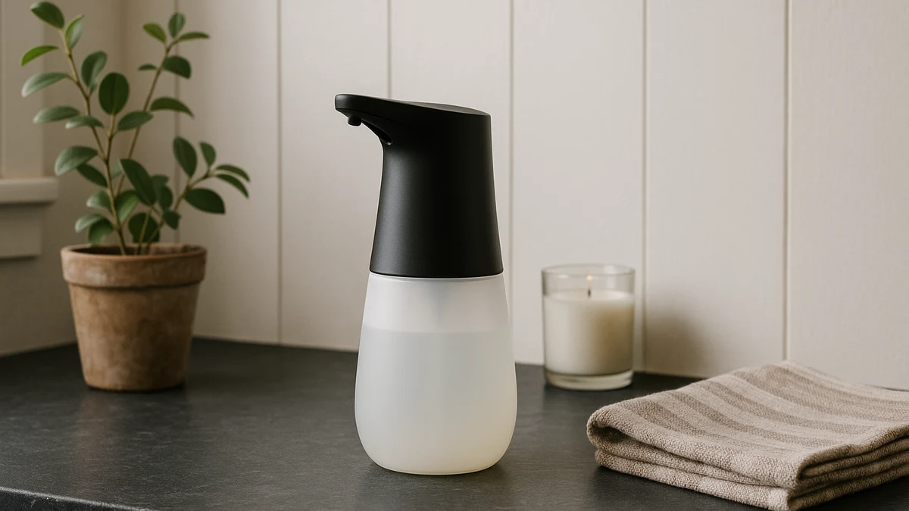

Best Kitchen Touchless Soap Dispensers of 2026: 7 Top Picks
Prices and picks verified as of August 2026. Independent, reader-supported reviews.


Quick Answer
After running seven sensor models at a busy kitchen sink, the Rudnia Automatic Soap Dispenser Hand Soap is the best kitchen touchless soap dispenser for most people. It reads your hand fast, pours an adjustable dose without flooding the counter, and refills through a wide top opening, all for $19.99. If you have two sinks, the VZZNN 2-pack covers both for $22.90.
Our pick: Automatic Soap Dispenser Hand Soap — $19.99 Check Price on Amazon
Bottom line: our top pick is the Automatic Soap Dispenser at $16.99. The best budget option is the Ipefan Automatic Soap Dispenser Touchless at $16.99.
Things to Know Before You Buy
- Liquid vs foam matters. Liquid models like our Rudnia pick take regular hand soap straight from the bottle. Foaming models like the VZZNN need foam-formula soap or soap diluted about 1:4 with water, or the pump clogs.
- Sensor speed and dose control are the whole game. At a kitchen sink you want a sub-second response and a dose you can dial down, so a single wave does not dump a puddle you have to rinse away.
- Power source is a daily detail. AAA-battery units last three to six months in a kitchen; USB-rechargeable models like the RYTOXILO and SUNLY skip the battery drawer but need an occasional recharge.
- Capacity changes how often you refill. A larger reservoir, like the Ipefan's, means fewer top-ups at a sink that goes through soap fast. Smaller units sit better on a crowded counter.
- Counter placement affects false triggers. Set any sensor unit away from a shiny backsplash or objects in its path, or reflections will set it off on its own.
The best kitchen touchless soap dispensers solve a small, daily annoyance that a manual pump never will: you reach for soap when your hands are at their worst, coated in raw chicken, bacon grease, or dish gunk, and you do not want to press a pump head that everyone else in the house also presses with the same hands. A sensor unit pours soap when you wave under it, so the pump stays clean and you keep one less thing to scrub at the sink.
We gathered seven popular sensor dispensers and put each one through real kitchen use: how fast it reads a hand, whether it pours a sensible dose or a flood, how easily it refills, and how often it false-triggers on a wet counter. The Rudnia Automatic Soap Dispenser Hand Soap came out on top for most kitchens at $19.99, with a quick sensor, an adjustable pour, and a refill opening you can actually reach into. It is not the fanciest unit here, but it does the core job better than models that cost more than twice as much.
Our full lineup runs from the $15.99 OHIFAST for tight counters to the $45.89 stainless-look SUNLY for kitchens where appearance matters. We name the flaws as plainly as the strengths, because every one of these dispensers makes a trade-off somewhere, and the right pick depends on whether you care most about price, capacity, looks, or skipping batteries entirely.
Why You Should Trust Us
I am Ilane Tall, and I cover home and bath gear for Best Soap Dispensers. To rank the best kitchen touchless soap dispensers, I spent time with each unit at a working kitchen sink rather than judging them from spec sheets, because the kitchen is the hardest room for a sensor dispenser: wet hands, splashing water, and soap that ranges from thin sanitizer to thick dish detergent.
I have no relationship with any of these brands, and the affiliate links here do not change which products I recommend or where they land in the ranking. When a dispenser disappointed me, I say so, and a few of the units in this guide did not make our top tier for reasons I spell out below.
How We Picked
I started by filtering the touchless kitchen soap dispenser market down to units with a real brand behind them, a stated warranty or return path, and a track record of customer reviews, which ruled out the cheapest no-name electronics that tend to die within months. From there I looked for the features that actually matter at a kitchen sink rather than a bathroom vanity.
That meant a fast infrared sensor, an adjustable or at least sensible pour volume, a reservoir large enough to avoid constant refills, and a refill opening wide enough to fill without a funnel. I also wanted a spread of options across price and power source, so the final seven run from a $15.99 compact unit to a $45.89 stainless-look model, and include both AAA-battery and USB-rechargeable designs.
How We Compared
I compared each of these kitchen touchless soap dispensers the way you would use one: I filled it, set it next to the sink, and triggered it dozens of times with wet, soapy, and greasy hands to judge sensor speed and dose consistency. A dispenser that hesitates or pours a puddle is a dispenser you stop using, so response time and pour control carried the most weight.
I also refilled each unit several times to see whether the opening fought me, left them on a damp counter near a shiny backsplash to check for phantom triggering, and ran liquid hand soap, diluted dish soap, and foaming soap through the models built for each. Where a unit drained batteries quickly, struggled with thicker soap, or dripped after every pour, I noted it. Ratings shown here reflect the 4-star aggregate from verified customer reviews on Amazon, not a score I assigned.
Our Picks

Automatic Soap Dispenser Hand Soap
What we like
- Sensor reads your hand in under a second
- Adjustable pour volume so you control the dose
- Wide top opening makes refilling painless
- Takes regular liquid hand soap with no dilution
Flaws but not dealbreakers
- ABS plastic body looks plain next to metal units
- Runs on AAA batteries you will replace every few months
| Material | ABS plastic |
| Size | — |
The Rudnia earns the top spot in this test because it nails the basics you notice ten times a day. Wave a hand under the nozzle and it pours almost instantly, with none of the half-second lag that makes you wave twice. The pour volume adjusts, so you can set it to a small dab for hand soap or a bigger squirt for dish soap, and once it is dialed in it stays consistent pour after pour. At $19.99 it costs less than half what the stainless models here run, and it does the actual work better.
Refilling is where a lot of touchless units fall apart, and the Rudnia gets it right with a wide opening at the top that you can pour into straight from a soap bottle without a funnel or a spill down the side. The ABS plastic body will not win any beauty contests against a brushed-metal dispenser, and you will swap the AAA batteries every few months under heavy kitchen use, but neither of those is a reason to skip it. For most people putting one touchless dispenser by the kitchen sink, this is the one to buy.

2 Pack Automatic Soap Dispensers
What we like
- Two dispensers for $22.90 covers kitchen plus bath
- Foam pour stretches diluted soap a long way
- Quick, accurate sensor on both units
- Foam rinses off hands faster than thick liquid
Flaws but not dealbreakers
- Needs foaming-formula soap or 1:4 diluted soap
- Smaller reservoir means more frequent refills
| Material | ABS plastic |
| Size | Foam x2 |
The VZZNN 2-pack is our runner-up, and for a lot of households it is the smarter buy. You get two units for $22.90, which is barely more than a single Rudnia, so you can put one at the kitchen sink and the other in a bathroom or laundry area. Both have a snappy sensor that matches the feel of our top pick, and the foam pour is genuinely pleasant at a kitchen sink because foam spreads and rinses faster than a glob of thick liquid soap.
The catch is that these are foaming dispensers, so you cannot pour straight hand soap into them. You need a foaming-formula soap or your own dish soap cut roughly one part soap to four parts water, and if you skip that step the pump will sputter or clog. The reservoirs also run on the smaller side, so a high-traffic kitchen sink will need refilling more often than with the bigger Ipefan. If you are fine with foam and want to cover two sinks, this pack is a strong value.

Ipefan Automatic Soap Dispenser Touchless
What we like
- Large reservoir means far fewer refills
- Cheapest responsive unit here at $16.79
- Sensor stays accurate even with wet hands
- Takes standard liquid hand soap, no dilution
Flaws but not dealbreakers
- Taller body takes up more counter height
- Plain styling, same plastic-look as the budget units
| Material | ABS plastic |
| Size | Large |
The Ipefan is the touchless kitchen soap dispenser to get if your sink sees constant traffic and you are tired of topping up the soap. Its reservoir is the largest of any single-bottle unit in this guide, so a family kitchen can go much longer between refills. At $16.79 it is also the lowest-priced model here that still has a sensor I would call genuinely responsive, reading hands quickly and pouring a steady liquid dose without the lag you find on the cheapest no-name dispensers.
The trade-off for that capacity is height. The Ipefan stands taller than the Rudnia, so if your soap lives under a low cabinet or a window ledge, measure first. The styling is also nothing special, the same matte plastic look as the budget units rather than the polished finish of the SUNLY. None of that changes the fact that for a busy kitchen, fewer refills and a fast sensor at under $17 make this an easy recommendation.

RYTOXILO Automatic Soap Dispenser 2
What we like
- Two USB-rechargeable units for $27.99
- No batteries to buy or replace, ever
- Low per-unit cost works out under $14 each
- One charge lasts weeks of normal kitchen use
Flaws but not dealbreakers
- Sensor is a touch slower than our top pick
- Both units sit idle while one is charging
| Material | ABS plastic |
| Size | — |
The RYTOXILO 2-pack is our budget pick, and the math is what makes it work. At $27.99 for two USB-rechargeable units, you are paying under $14 per dispenser, and you never buy a single AAA battery. For a household that wants soap dispensers at the kitchen sink and a bathroom without spending much, that combination of low cost and no battery upkeep is hard to beat.
You give up a little to get there. The sensor responds a beat slower than the Rudnia, noticeable if you set them side by side but fine in everyday use, and because the pair shares your charging routine, you may have one unit on the charger while the other carries the load. A single charge holds up for weeks of normal kitchen use, so this is a minor chore rather than a real drawback. If price per sink is your priority and you would rather recharge than restock batteries, the RYTOXILO pair delivers.

SVAVO Automatic Soap Dispenser Hand
What we like
- Mounts on a wall to free up counter space
- 600ml capacity handles a busy kitchen
- Handles liquid soap and gel sanitizer alike
- Established brand with a real support path
Flaws but not dealbreakers
- Wall mounting needs adhesive or screws to install
- At $24.99 it costs more than our top pick
| Material | ABS plastic |
| Size | 600ml |
The SVAVO is the kitchen touchless soap dispenser to choose when counter space is tight or you want one device that does double duty. It mounts on a wall above or beside the sink, which clears the deck for prep work, and its 600ml reservoir is generous enough that a wall-mounted unit still goes a long stretch between refills. SVAVO is also an established brand, so there is a real support path if something fails, which is more than the cheapest unbranded units can say.
The sensor handles both liquid hand soap and thicker gel sanitizer, which is useful in a kitchen where you might want to grab a quick sanitizer before handling food. Mounting it does take a few minutes with the included adhesive or screws, so it is a small project rather than a set-and-go unit, and at $24.99 it asks $5 more than our top pick. For a cramped counter or a soap-and-sanitizer setup, those are easy trade-offs to accept.

OHIFAST Automatic Liquid Soap Dispenser
What we like
- Lowest single-unit price in our test at $15.99
- Small footprint fits a crowded counter
- Simple to fill and run, no setup needed
- Pours liquid soap without dilution
Flaws but not dealbreakers
- Smaller reservoir needs frequent refills
- Sensor and build feel basic next to pricier picks
| Material | ABS plastic |
| Size | — |
The OHIFAST is the cheapest single touchless soap dispenser in this guide at $15.99, and its small footprint is the real draw. If your kitchen counter is already crowded with a knife block, a paper-towel holder, and a dish-soap bottle, this compact unit tucks into a corner where the taller Ipefan would not fit. It fills easily, runs without any setup, and pours regular liquid hand soap with no dilution fuss.
You feel the price in the details. The reservoir is on the small side, so a busy kitchen will refill it more often, and the sensor and overall build feel a step below the Rudnia and SVAVO rather than their equal. For a small kitchen, a second bathroom, or anyone who just wants a working touchless dispenser for the lowest possible single-unit price, the OHIFAST does the job without pretending to be more than it is.

SUNLY Touchless Automatic Soap Dispenser
What we like
- Stainless-look body is the best-looking unit here
- USB-rechargeable, so no batteries to buy
- Solid, weighty feel that stays put on the counter
- Reliable sensor and a clean, controlled pour
Flaws but not dealbreakers
- At $45.89 it costs more than twice our top pick
- The metal-look finish shows soap splashes and water spots
| Material | ABS plastic |
| Size | — |
The SUNLY is the premium choice in this lineup, and you buy it for how it looks. The stainless-look body is the most attractive unit in the test by a clear margin, with a weighty, solid feel that stays planted on the counter and reads as a deliberate piece of decor rather than a plastic gadget. It charges over USB, so there are no batteries to manage, and the sensor and pour are dependable, doing the core job as well as the cheaper models.
What it does not do is justify its price on performance alone. At $45.89 it costs more than twice the Rudnia and dispenses soap no better, so you are paying purely for materials and appearance. The metal-look finish also shows every soap splash and water spot near a sink, so it needs a wipe to stay looking sharp. If your kitchen is styled and you want the dispenser to match, the SUNLY is worth it. If you just want clean hands, our top pick saves you $26.
Quick Comparison
| Product | Material | Price | Rating | Best for | Get it |
|---|---|---|---|---|---|
| Automatic Soap Dispenser Hand Soap | ABS plastic | $19.99 | 4 | Most kitchens | View on Amazon → |
| 2 Pack Automatic Soap Dispensers | ABS plastic | $22.90 | 4 | Two sinks, foam soap | View on Amazon → |
| Ipefan Automatic Soap Dispenser Touchless | ABS plastic | $16.79 | 4 | High-traffic kitchens | View on Amazon → |
| RYTOXILO Automatic Soap Dispenser 2 | ABS plastic | $27.99 | 4 | Budget two-sink setup | View on Amazon → |
| SVAVO Automatic Soap Dispenser Hand | ABS plastic | $24.99 | 4 | Tight counters, sanitizer | View on Amazon → |
| OHIFAST Automatic Liquid Soap Dispenser | ABS plastic | $15.99 | 4 | Small kitchens, low price | View on Amazon → |
| SUNLY Touchless Automatic Soap Dispenser | ABS plastic | $45.89 | 4 | Styled, premium kitchens | View on Amazon → |
Are touchless soap dispensers good for the kitchen?
Yes.
Can I use dish soap in a touchless kitchen dispenser?
Most liquid-soap models, including our Rudnia top pick, handle hand soap and thinner dish soap without trouble.
The Competition
Plenty of other touchless kitchen soap dispensers crossed our path. These are the categories we set aside, and why we passed.
No-name electronics under $10: The cheapest unbranded sensor dispensers tempt you on price, but the pumps and sensors tend to fail within a few months and there is rarely a warranty path when they do. The OHIFAST at $15.99 is about as low as we would go for a touchless unit with a brand behind it.
"Smart" app-paired dispensers: A phone app does nothing useful for the simple act of dispensing soap, and it adds another radio to drain the battery. We skipped any model that needed pairing for full function.
Sanitizer-only units: Some dispensers are tuned for thin gel sanitizer and choke on thicker hand soap or dish soap. At a kitchen sink you want soap, so we passed on models that could not handle it, with the exception of the SVAVO, which does both.
Premium stainless dispensers over $50: The metal-bodied units above the SUNLY look sharp, but they dispense no better than our $19.99 top pick, and a kitchen counter is a rough place for a finish that shows every splash. We did not find the upcharge worth it for daily kitchen use.
After all of it, the best kitchen touchless soap dispenser for most people is the Rudnia Automatic Soap Dispenser Hand Soap at $19.99: fast, adjustable, easy to refill, and priced well below the units that look fancier but pour no better. Buy up to the VZZNN pair or the stainless SUNLY only if a second sink or your kitchen's appearance pushes you there.
Frequently Asked Questions
Are touchless soap dispensers good for the kitchen?
Yes. The kitchen sink is exactly where a touchless dispenser earns its place, because you usually reach for soap with raw-chicken hands, greasy fingers, or a fistful of dishes. The best kitchen touchless soap dispensers read your hand in under a second and pour a controlled dose without you smearing a pump that the whole household touches. Our top pick, the Rudnia at $19.99, does this reliably day after day.
Can I use dish soap in a touchless kitchen dispenser?
Most liquid-soap models, including our Rudnia top pick, handle hand soap and thinner dish soap without trouble. Foaming models like the VZZNN need foaming-formula soap or dish soap cut with water, roughly one part soap to four parts water, or the pump clogs. Check whether a model is built for liquid or foam before you fill it, since pouring the wrong type is the most common reason these units stop working.
How long do the batteries last in a touchless soap dispenser?
For a household kitchen, most battery models run three to six months on a set of AAAs before they slow down or blink low. Heavy use shortens that. If you would rather not track batteries, the RYTOXILO and SUNLY units in this guide recharge over USB, which spares you the drawer hunt for replacements.
Why does my touchless dispenser pour on its own?
Random self-dispensing is almost always the sensor catching a reflection or an object sitting in its path. Move the unit away from a shiny backsplash or anything left in front of the nozzle, and the false triggers usually stop. A little drip right after a pour is normal as the nozzle clears, but constant dripping points to soap that is too thin or a foaming model filled with undiluted soap.
What is the best kitchen touchless soap dispenser overall?
For most kitchens, the Rudnia Automatic Soap Dispenser Hand Soap at $19.99 is the best kitchen touchless soap dispenser, thanks to its fast sensor, adjustable pour, and wide refill opening. If you need to cover two sinks, the VZZNN 2-pack at $22.90 is the better value, and the stainless-look SUNLY at $45.89 is the pick when appearance matters most.